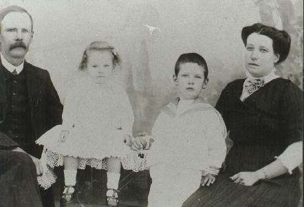

|
Kinders van b1.c6.d6. Jan Hendrik Rudolf Henning * 13-10-1844: e1. Johannes Stephanus * 1871; e3 Susara Wilhelmina * 1874 (getroud Henning); e5 Stephanus Jesaies * 1878. Agter: e10 Jacobus Christoffel * 1889; e7 Theunis Jacobus Petrus * 1882; e4 Jan Hendrik Roedolf * 1876
Beskou lys van mense op foto
|
 |
b1.c6.d6.e7. Theunis Jacobus Petrus Henning * 9-8-1882, sy eggenote Gertruida Elizabeth Johanna Schoeman en hulle twee kinders Jan Hendrik Roedolf (f1) en Gertruida Elizabeth Johanna (f2) getroud Lamprecht
Beskou lys van mense op foto